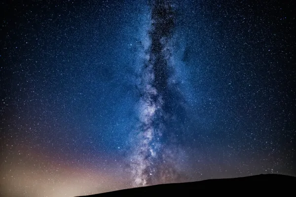

El Universo
El basto vacio negro iluminado por galaxias
Un avance sobre el espacio y todo lo que conocemos, estamos flotando en un fondo comisco lleno de maravillas que aun no conocemos.
Aquellos que llegan mas alla de la cima son los que sienten la necesidad de ser alguien en la vida.
El basto vacio negro iluminado por galaxias
los cuerpos celestes girando en orbita.
Las luces que decoran el espacio
Entones Estamos en este basto universo por alguna razon? O somos la prueba de un Asar de suerte del Destino...
Introduccion
El espacio es un vacío casi perfecto sin aire. No está vacío: contiene muchas formas de radiación, así como partículas de gas, polvo y otra materia flotando en el vacío. Desde la Tierra, podemos observar planetas, estrellas y galaxias que se encuentran a 46.5 mil millones de años luz en cualquier dirección desde nuestro planeta. Esta región del espacio se llama el universo observable. La edad estimada del universo oscila entre 11.4 mil millones y 13.8 mil millones de años.

Desde nuestra perspectiva terrestre, el espacio exterior es todo lo que se encuentra fuera del límite que separa la Tierra del espacio. Hay diferentes definiciones de dónde comienza exactamente el espacio exterior. El límite más utilizado es la línea de Karman, que se encuentra a 100 km sobre el nivel medio del mar. A partir de esta marca, el aire se vuelve demasiado delgado para que los aviones regulares (que dependen de la sustentación) puedan volar.
El Universo
El universo es la conjunción de todo aquello existente; ya sea material como los planetas, las estrellas, galaxias o en contrariedad inmaterial como la energía, el espacio o el tiempo. Es por esto, que podemos afirmar que el universo es el espacio y el tiempo en el que se encuentran los planetas y sus leyes físicas que los rigen (como por ejemplo la ley de gravedad).
El universo, a grandes rasgos, está formado por galaxias interconectadas que originan cúmulos de galaxias que a su vez se relacionan con otros cúmulos generando, en consecuencia una red cósmica que se expande a lo largo del universo.

El universo tiene una extensión variable y difícil de calcular pues puede a su vez contener otros universos. A su vez, muchas veces solemos pensar que el universo es estático pero la realidad es que se trata de un sitio cambiante cargado de fenómenos.
Los Planetas
Un planeta es un cuerpo celeste que gira alrededor de una estrella, y que tiene suficiente masa para alcanzar un equilibrio hidrostático (entre la fuerza de gravedad y la energía que genera su núcleo). Este equilibrio le permite que mantenga su forma de esfera, que domine órbita (impide que otros cuerpos invadan su recorrido) y que no emita luz propia, sino que refleje la luz de la estrella alrededor de la que gravita.

Nuestro planeta Tierra, al igual que los siete planetas restantes del sistema solar, giran en órbita alrededor del Sol. Todos comparten las características que definen a un cuerpo como “planeta” y, sin embargo, presentan diferencias según su composición y su ubicación en el sistema solar.
Son ocho los planetas de nuestro sistema solar, en orden desde el más cercano hasta el más alejado del Sol:
Mercurio: Es el planeta más pequeño del sistema solar, tiene un cuerpo rocoso similar al de la Tierra y su núcleo ocupa casi la mitad del planeta (lo que genera un campo magnético potente). No tiene satélites naturales.
Venus: Es el tercer planeta en cuanto a tamaño (de menor a mayor), tiene un diámetro de tamaño similar al de la Tierra y no posee satélites naturales.
Tierra: Es el cuarto planeta en cuanto a su tamaño, que prosigue a Venus, y tiene un solo satélite natural, la Luna. Es el planeta más denso del sistema solar y el único que tiene agua en su superficie.
Marte: Es el segundo planeta más pequeño y también se lo conoce como “el planeta rojo” debido a su aspecto rojizo por el óxido de hierro de su superficie. Tiene dos pequeños satélites naturales: Fobos y Deimos.
Júpiter: Es el planeta más grande del sistema solar. Es de tipo gaseoso formado, en su mayor parte, por hidrógeno y helio, y tiene sesenta y nueve satélites naturales.
Saturno: Es el segundo planeta más grande (le sigue a Júpiter) y es el único planeta del sistema solar que tiene anillos planetarios (anillos de polvo y otras partículas pequeñas que giran a su alrededor). Tiene sesenta y un satélites detectados, aunque se calcula que el número total podría rondar en los doscientos satélites.
Urano: Es el tercer planeta de mayor tamaño y tiene la atmósfera más fría del sistema solar. Su interior está compuesto principalmente por hielo y roca, y tiene veintisiete satélites naturales detectados.
Neptuno: Es el cuarto planeta de mayor tamaño y tiene una composición similar a la de Urano, con una gran proporción de hielo y de roca en su interior. Su superficie es de aspecto azul por la presencia del gas metano. Tiene catorce satélites detectados.

Las Estrellas
Las estrellas son motores de energía cósmica que producen calor, luz, rayos ultravioleta, rayos X y otras formas de radiación. Están compuestas casi en su totalidad de gas y plasma, un estado de supercalentamiento de la materia compuesta de partículas subatómicas. Aunque la estrella más conocida, el Sol, existe en solitario, tres de cada cuatro estrellas existen como parte de un sistema binario compuesto por dos estrellas orbitando mutuamente.
Nadie sabe cuántas estrellas existen, pero podrían alcanzar un número extraordinario. Nuestro universo podría albergar más de 100 000 millones de galaxias, y cada una de ellas podría tener más de 100 000 millones de estrellas. Tan sólo en una noche clara, desde la Tierra pueden observarse alrededor de 3000 estrellas a simple vista. Los humanos de diferentes culturas han dibujado el cielo mediante estas estrellas.
Algunas estrellas han sobresalido siempre del resto. Su brillo es un factor de cuanta energía despiden, lo cual se conoce como su luminosidad, y también la distancia a la que se encuentran de la Tierra. Las estrellas del cielo también pueden parecer de diferentes colores porque sus temperaturas no son iguales. Las estrellas calientes son blancas o azules, mientras que las más frías parecen tener tonos rojos o anaranjados.
Estamos Solo?
El universo es un sitio grande, muy grande, y ahora somos conscientes de que, además de galaxias y estrellas, los planetas son muy comunes en él. Esto puede parecer algo muy obvio, pero hasta 1992 no tuvimos constancia observacional de la existencia de planetas orbitando estrellas distintas de nuestro Sol.
Así que hoy día tenemos constancia de que en la parte del universo que podemos ver, el universo observable, hay unas cien mil millones de galaxias. En cada una de esas galaxias estimamos que han de haber unas cien mil millones de estrellas. Y ahora sabemos que hay aproximadamente un planeta por cada estrella.
Conociendo todos estos datos no es extraño que el ser humano se cuestione: ¿Estamos solos en el universo? No es para nada un planteamiento original, pues la humanidad se lo ha preguntado desde que tuvo la constancia de su lugar en el universo.